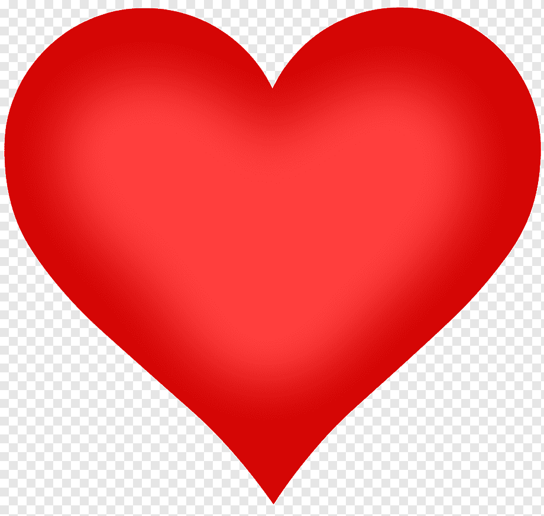

Contato: (11) 9999-9999
Email: atamor@atamor.com.br
Facebook: @atamor
Chave Pix: atamordoacoes@atamor.com.br
Lembre-se: você pode ligar para nós a qualquer momento para obter informações sobre nossos pontos de coleta e entender melhor como funciona o nosso trabalho. Ficamos felizes em esclarecer todas as suas dúvidas e mostrar como você pode fazer parte dessa causa tão especial. A sua ajuda faz uma diferença enorme, contribuindo diretamente para a alegria e o conforto dos pacientes que tanto precisam. Muito obrigado pelo seu interesse e generosidade! Juntos, podemos trazer mais felicidade e esperança para aqueles que enfrentam essa jornada difícil. ❤️
